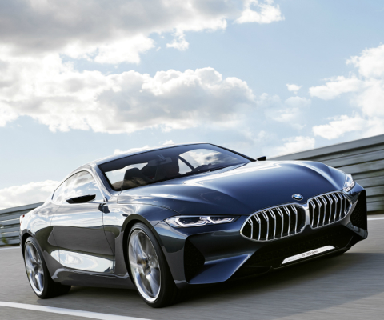
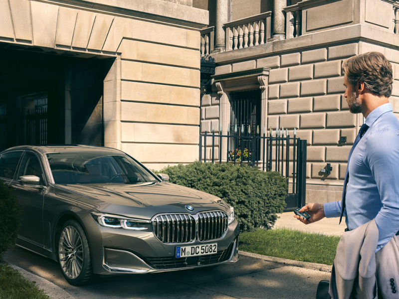
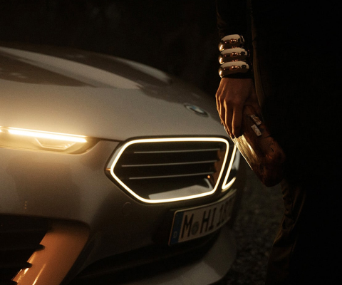
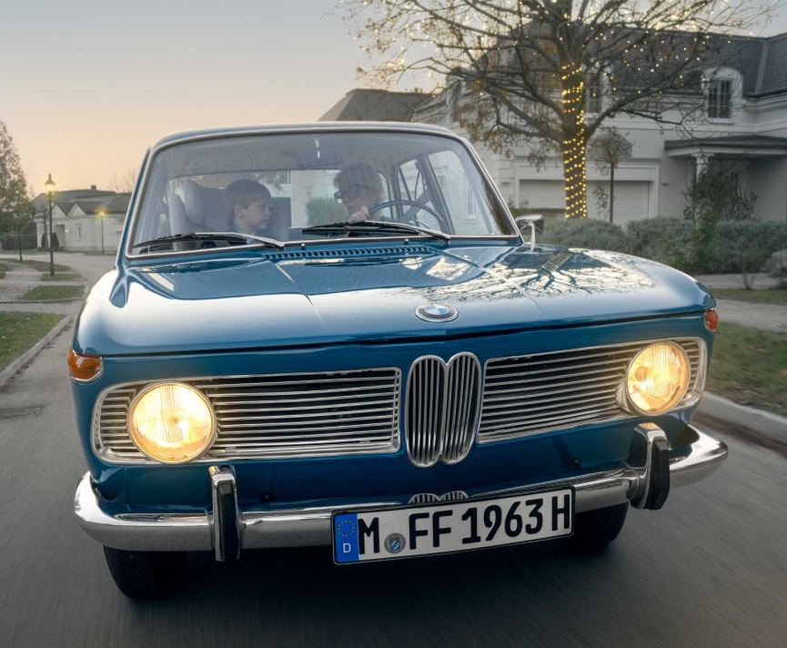
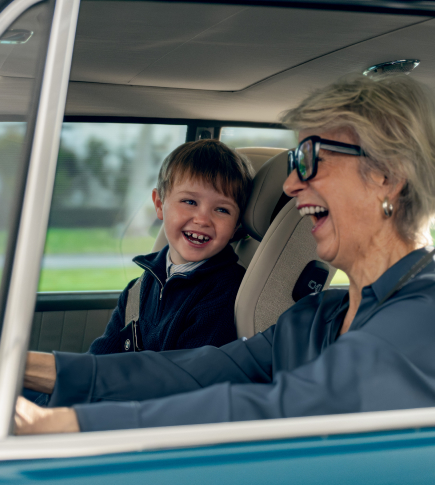
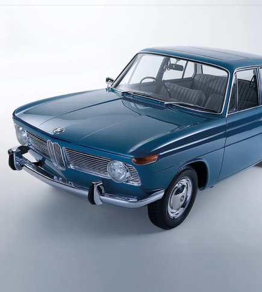
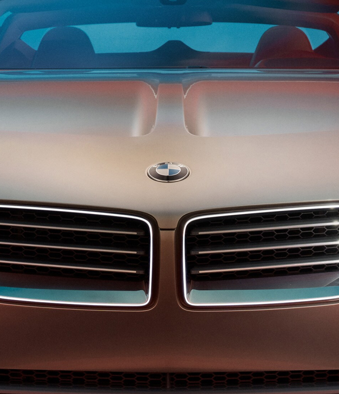
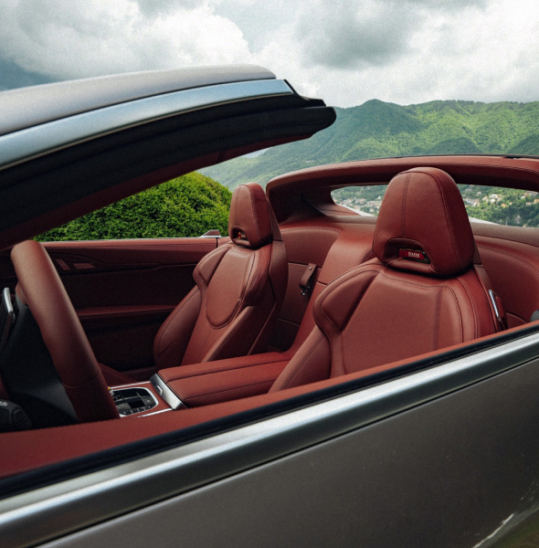
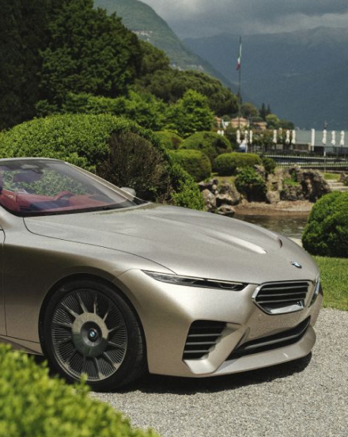

Freude
Freude
Joy can be so many things. A statement, driving pleasure, enjoying life conscientiously. And joy is both a driver and a promise. Whatever else it may be, joy is a powerful and intense feeling that lets us look positively to the future. With stories that stir your senses and tales that grab your attention, we show you how joy determines our lives and therefore also our mobility.
- 
- 
- 
Two Generations,
One Shared Driving Pleasure
- Whether in everyday moments or especially during the festive season, giving and spreading joy is always appreciated. BMW inspires us to create a gift for a special journey together - one that puts us in a festive mood and brings a smile to our faces. Enjoy the story of an emotional connection between grandchild and grandmother with a special appearance by the famous BMW 1500, the legendary BMW Neue Klasse series from the early 1960s. As always, music plays an important role.
- 
- 
- 
BMW Skytop
: the magic of exclusive moments.
The magic of special cars? They make us dream - of sliding behind the wheel, of driving along iconic roads where time stands still, or simply of being brought to life.
BMW Skytop
- Fuel consumption combined 11.6 l/100 km
- CO2 emissions combined 264 g/km in accordance with WLTP
- CO2 class G. Preliminary reference value.
- Pictures show the concept vehicle, details of the series may vary.
-
Exclusive moments in limited numbers
The BMW Skytop is a masterpiece of automotive craftsmanship designed for unforgettable moments. For Mühlbauer, 'Exclusive moments are priceless, which is why they matter so much'. The BMW Skytop embodies special experiences to be savoured with all the senses: precise craftsmanship, select materials, luxurious comfort, and timeless elegance. Here, the journey becomes the destination.
The courage to dream also inspires Birce Akalay, Turkish actress and jewellery designer, who has experienced the BMW Skytop firsthand. For her, being able to pursue her own dreams is a special privilege. 'Like climbing a mountain, it demands strength, patience, and perseverance - but the rewards are worth it. Special moments can come as surprises. But the ones I value most are those earned through considerable effort. The hard work makes them even more meaningful'. -

“The BMW Skytop boasts a distinctive design that combines top-tier driving dynamics with elegance. Announcing its production feels like a dream come true”, says Adrian van Hooydonk, Head of BMW Group Design.”
Adrian van Hooydonk
Head of BMW Group Design
- 
- 
Living the moment
For Birce, modern luxury has taken a new form: understated yet ahead of its time in terms of comfort - a form shared by the BMW Skytop. Mühlbauer sees its blend of elegance, precision craftsmanship, and driving dynamics as the essence of its appeal. Whether the workshop for unforgettable moments is a film studio, a jewellery atelier, or a BMW plant, each shares the drive to take us on a unique journey.
Dynamism and elegance
in the tradition of the legendary BMW
roadsters